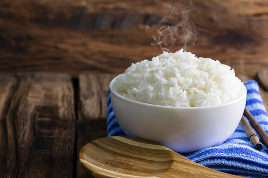

Home
Cooked Rice Recipe
This cooked rice recipe yields 3-6 servings.

This fluffy and delicious pancake recipe will be a great start to any morning. Ready in 20 minutes.
Ingredients
- 1 cup of long grain white rice
- 2 cups of water*
- Optional: 1/2 teaspoon salt
- Optional: 1 teaspoon butter or oil to prevent sticking
Steps
- Rinse the rice in the pot that you will be using with cold water. Keep rinsing until the water it mostly clear.
- Fill the pot of rice with the 2 cups of water and any optional ingredients.
- Bring the rice to a boil over medium-high heat.
- Reduce the heat to low, cover the pot with a lid, and let it simmer for 18-20 minutes.
- Remove it from heat and let the rice sit uncovered for 5 minutes.
- Fluff the rice with a fork or rice paddle and serve.
* : Water ratios are different for specific types of rice.